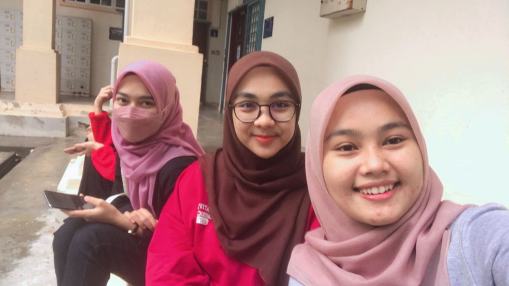

freind
let me share a bit about my freinds....
i meet a lot of people in the journey of life but there are only a few who leave a mark on me. while i find a good friend which can able to make a positive impact on my life. i find out what I like most about them is that they very polite and kind-hearted. they have a very helping nature. Whenever in need, they never denies for any help and has always helped me in solving my problems in academics as well in life. they always carries a positive attitude towards everything and motivates me equally.
| NAME | HOMETOWN |
|---|---|
| Aisyah Nazihah Binti Mohamad Sholeh | Kedah |
| Age | 21 years old |
| Gender | Female |
| Marital status | Single |
| NAME | HOMETOWN |
| Nur 'Aqilah Binti Ab Rahim | Kelantan |
| Age | 23 years old |
| Gender | Female |
| Marital status | single |
| NAME | HOMETOWN |
|---|---|
| Nurul Alya Amni Binti Ramli | Kelantan |
| Age | 21 years old |
| Gender | Female |
| Marital status | Single |
| NAME | HOMETOWN |
| Alia Sabrina Binti Salahuddin | Kedah |
| Age | 21 years old |
| Gender | male |
| Marital status | Single |